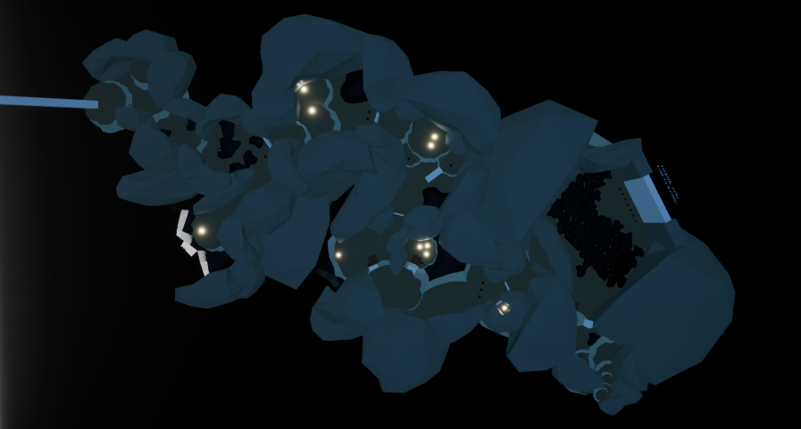

Heilsgeschichte
Heilsgeschichte is a short, abstract, third person puzzle game. I made the entire game by myself, including the models and animations. As such, I was able to explore and practice using parts of Unreal that will be useful when working with animators and artists, such as Animation Blueprints.
1 Level | Single Player
Highlights
Modular Level Design and reusable assets
Character Controls defined by State Machine

Modular Level Design
A single model can often be reused with different scaling and rotation to convincingly give the
impression of numerous unique shapes. Reusing models saves time, storage, and also memory in game.
I relied heavily on this technique when building the level for Heilsgeschichte. Almost all walkable
surfaces use the platform model, while most walls are made from the cavity model. The cavity has one
convex side and one concave side, which allowed me to use it to shape large, rounded caverns as well
as winding tunnels.
| Cavity Model | PlatForm Model |
|---|---|
| Level Made Primarily from the two models |
|---|
|  |
State Machine
My preferred solution for context-sensitive controls is to use a finite state machine.
For heilgeshchichte, I implemented all ability behavior within the character, and gave each state a
reference to the character. This way, the abilities for the character are reusable; if I want an ability to
be possible in multiple states, I only have to call that function on the character within the state's overridden
input event. If the code must be repeated in multiple states - and inheritance is not suitable - the repetition
is limited to a single, readable line of code.
Allowing the character to define its own behavior, and allowing the states to define when to call this behavior
provided me with a robust solution that minimized time spent debugging complex conditional logic within the
character. It would also be easy to add additional states and abilities to the character with this system.
| Code Sample |
|---|
|